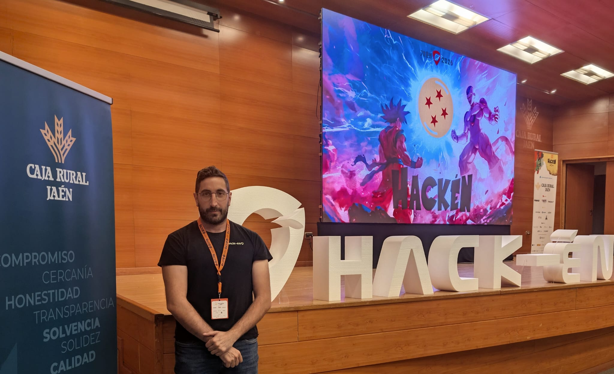

Portafolio profesional · Disponible para oportunidades IT
Hola, soy Mois0n
Administrador de Sistemas | Redes | Virtualización | Ciberseguridad
Técnico Superior en Administración de Sistemas Informáticos en Red, orientado a infraestructura IT, redes, virtualización, cloud y ciberseguridad.
En este portafolio documento proyectos reales, laboratorios técnicos y certificaciones para mostrar cómo trabajo, qué tecnologías utilizo y qué competencias puedo aportar en un entorno profesional.
Busco oportunidades en administración de sistemas, soporte IT, redes, infraestructura, cloud y ciberseguridad junior.

Proyecto destacado
Infraestructura segura con Proxmox VE, IPFire y aplicación web
Caso práctico de infraestructura IT donde diseño y documento un entorno virtualizado con segmentación de red, firewall dedicado, servicios web, base de datos y automatización mediante Python.
Este proyecto demuestra competencias en administración de sistemas, redes, virtualización, seguridad perimetral, despliegue de servicios y documentación técnica.